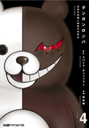
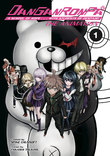
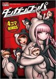

Gore es una palabra inglesa cuyo significado literal es "sangre". El término GORE se ha hecho bastante popular por utilizar escenas altamente gráficas o explícitas para representar hechos sangrientos o violentos. Algunos lo tildan de terror y otros de humor, lo más adecuado sería referirse a él como un género que abarca lo desagradable (cortadas, desmembramientos, tortura, mutilación, sangre, etc…).
Danganronpa es una franquicia japonesa de videojuegos desarrollada y publicada por Spike Chunsoft y localizada por NIS América. Cuenta con varios juegos de anime, manga, juegos móviles y novelas ligeras basados en el universo y los personajes de Danganronpa.
Algunos de sus múltiples cómics son los siguientes:
|  |  |  |
| The Manga | The Animation | Trigger Happy Havoc 4koma KINGS |
La historia se centra en Makoto Nagei, un joven que ha tenido la "suerte" de ser uno de los nuevos alumnos de la Academia Hope's Peak, una institución conocida mundialmente por formar a lo mejor de los mejor en todos los ámbitos, es decir, los conocidos como "Ultimates". En su clase, además de él, otros catorce alumnos esperan a comenzar las clases, pero pronto conocen a Monokuma, una adorable criatura que les ofrece participar en un violento juego si quieren graduarse y salir de ahí. El objetivo es matar a uno de sus compañeros y, en el posterior juicio, salir inocente.
King’s Game está basada en una novela para móviles escrita por Nobuaki Kanazawa . La adaptación al manga cuenta con cinco volúmenes, dibujado por Hitori Renda y prepublicado en la revista Manga Action del editor Futabasha entre Enero de 2011 y Junio de 2012. Cuenta también con una adaptación cinematográfica lanzada en 2011 bajo el nombre de Ōsama Gēmu.
Los estudiantes de una clase se ven sometidos a una macabra versión del “juego del rey”. Todos reciben en sus móviles la orden del día y los jugadores deberán acatarla. Inicialmente, las órdenes son tonterías como un beso o tocar las tetas a alguien, pero paulatinamente se tornan incómodas, extrañas, incluso profundamente sexuales… Quien no obedece la orden en un plazo de 24 horas, súbitamente aparece muerto… y NO está permitido abandonar el juego. Las relaciones entre los chicos caen en la psicosis, la desconfianza, el temor y la paranoia. El temor a morir se sobrepone a la amistad que alguna vez tuvieron entre ellos. ¿Qué o quién estará detrás de todo esto?

Tokyo Ghoul es un manga creado por Sui Ishida. Serializada en la revista de Shueisha; "Weekly Young Jump", con entrega semanal desde septiembre del 2011. Compilado en 14 volúmenes (tankōbon) a partir de junio del 2014.
Extraños asesinatos están ocurriendo uno tras otro en Tokyo. Debido a las pruebas encontradas en las escenas, la policía concluye que los ataques son obra de Ghouls que son seres vivos que se alimentan de la carne humana. Kaneki y Hide, dos amigos de infancia que van a la Universidad Kamii, se encuentran en un Café preguntándose ¿Qué son los Ghouls? y ¿Cuál será su apariencia?, luego de un rato llegan a la conclusión de que quizá ellos se ocultan tras una apariencia humana.